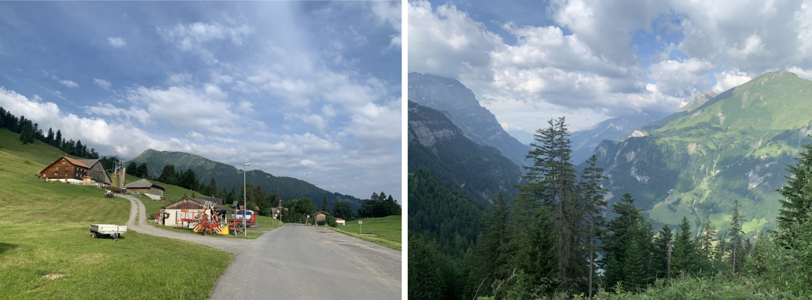
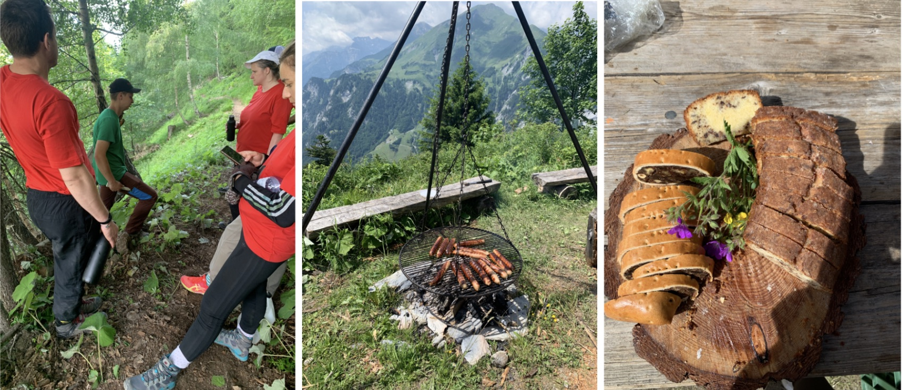
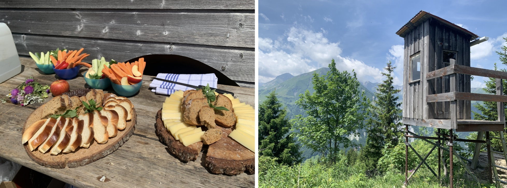

If someone had told me a month earlier that I would soon be volunteering on a mountain more than 1,000 meters above sea level in Switzerland, I would never have believed it.
I had practically no hiking experience, let alone experience doing physical labor on a mountain. But somehow, there I was, surrounded by the breathtaking scenery of the Tamina Valley, holding a heavy tool I barely knew how to use, wondering what on earth I had gotten myself into.
We had left at 6:30 that morning, driven for an hour and a half to St. Margrethenberg, near Pfäfers, and then taken another vehicle farther up the mountain. Through the trees, we could catch glimpses of the valley far below. The mountains were magnificent, the air was fresh, and everything seemed wonderfully peaceful.
That peace didn’t last very long.

There were eleven volunteers. After a traditional Swiss breakfast of bread, dried meat, cheese, and apples, we were divided into two groups according to our footwear. Those wearing proper hiking boots would work on the higher, steeper slopes. Those wearing sneakers, including me, would take the easier route.
I was relieved. Surely the easier route couldn’t be that difficult.
I was wrong.
The trail was barely wide enough for one person, with steep slopes dropping away beside us. Everyone else seemed perfectly comfortable walking downhill. I, on the other hand, was moving so slowly that the gap between me and the person ahead kept growing.
Before long, people were coming to my rescue. Someone took my tools. Another volunteer let me hold onto her back, occasionally reaching around to steady me.
By the time we reached our work area, I was already exhausted.
And we hadn’t even started working.
Our mission was to build a narrow trail through thick mountain grass. Each volunteer was responsible for roughly five meters. We were given heavy tools to chop through the grass and roots, including one rather dramatically named “The Last Hope,” which could cut from either side.
I thought that sounded promising.
Unfortunately, even my last hope wasn’t much help.
The grass was unbelievably stubborn. Its roots went deep into the ground, and no matter how hard I chopped, I barely made any progress. The volunteers on either side of me were working enthusiastically, clearing their sections while I continued attacking the same miserable patch of earth.
Eventually, a young forest worker came over. I’ll call him Round Face, because he had a wonderfully round, youthful face.
He patiently showed me how to use the tool. He suggested kneeling instead of standing, demonstrating the technique several times. I tried to imitate him, but the tool felt as though it weighed a hundred pounds.
Finally, he took over the chopping and handed me a shovel. He would break up the ground, and I would clear away the loose soil.
I thought shoveling would be easy.
Apparently, I was wrong about that too.
Round Face explained that the trail needed to slope slightly inward so hikers wouldn’t slip off the mountain. We also had to move the loose soil far enough away from the path. Otherwise, someone might mistake it for solid ground, step onto it, and slide down the slope.
Who knew that even moving dirt required so much engineering?
As I worked, I kept thinking of the Chinese saying, “To get rid of weeds, you must pull out the roots.” For the first time, I truly understood how determined those roots could be. We also uncovered stones of all sizes, which we carefully moved aside so they wouldn’t roll downhill and injure anyone.
Every now and then, I stopped to look around. Across the valley were enormous cliffs and towering trees. Tiny wildflowers grew between the rocks, and little insects crawled through the freshly exposed soil. The scenery was so beautiful that it was hard to believe I was struggling so miserably in the middle of it.
By the time we stopped for water, I had lost count of how many times Round Face had helped me.
I watched the other volunteers making steady progress. Meanwhile, I had spent most of the morning struggling with a tool, slowing people down, and needing help with things that everyone else seemed to find perfectly manageable.
I was beginning to wonder whether I was helping the forest or simply creating more work for everyone else.
“I must be the worst volunteer you’ve ever had,” I said to Round Face, half joking, half serious.
He immediately shook his head.
“No, not at all.”
He told me about a group of investment bankers who had volunteered before. They were big, strong men, much stronger-looking than me, but apparently they had barely accomplished anything.
I laughed. I assumed he was just being nice.
Then he told me that I was enthusiastic, that I was willing to work, and that he appreciated my attitude.
For a moment, I didn’t know what to say.
All morning, I had been painfully aware of everything I couldn’t do. I couldn’t walk down the mountain properly. I couldn’t handle the heavy tools. I couldn’t even clear a few meters of grass without someone helping me.
Every time someone waited for me, carried something for me, or showed me how to do a task yet again, I felt a little more embarrassed.
And here was this young man, who had every reason to be impatient with me, noticing something good about me that I hadn’t even considered.
He could have measured me by how much work I’d finished. Instead, he had noticed that I was trying.
What moved me wasn’t just what he said. It was the way he had treated me all morning. He never rushed me, never made me feel stupid, and never seemed annoyed when I struggled. He simply found another way to help me succeed at something.
I had come to the mountain hoping to be useful, and somehow this young man had made me feel that I was, even when I could barely do the work.
I wanted to cry a little.
Of course, I didn’t. I still had five meters of mountain to deal with.
Round Face told me he was doing civilian service, an alternative to military service in Switzerland. He had grown up enjoying the outdoors and worked as an electrician. Spending time in the forest, he said, was practically paradise for him.
For me, getting down the mountain in one piece already felt like a major achievement.
He and another volunteer also taught us about the trees. They would point to one and ask us to identify it.
Most of us were hopeless.
“Pine tree?”
“Christmas tree?”
We learned to recognize maple and spruce trees and how to tell whether a tree was healthy. One tree looked perfectly fine to us, but its new shoots had all been eaten by deer.
Why were deer causing such a problem? Round Face promised we’d learn more later.
By lunchtime, we had managed to finish a section of trail. Unfortunately, reaching lunch meant climbing all the way back up the mountain.
The climb seemed endless. We had to step over enormous fallen tree trunks, sometimes climbing onto them before jumping down the other side. After what felt like forever, someone announced that we had completed only 30 percent of the climb.
“Are you kidding me?” I blurted out.
Round Face offered to carry my tools. Then he offered again. And again.
But I had already needed so much help that morning, and I was determined to carry something myself. I thanked him and stubbornly kept going.
Eventually, we made it.
Lunch had never looked so beautiful.
There were grilled sausages, thick soup, bread, and fresh vegetables. We washed our hands with water poured from a large container, then sat down to eat. After all that physical work, even the simplest food tasted absolutely wonderful.

While we ate, one of the forest conservation leaders brought out old photographs of the mountain. He showed us how the area had suffered forest fires, heavy snow, and flooding over the years, and how volunteers had helped restore and protect it.
He also explained why the forest was struggling to regenerate. Many trees were aging, and young trees often couldn’t survive because deer kept eating their new shoots. Wolves, he explained, played an important role in controlling deer populations and maintaining the balance of the ecosystem.

I had always admired forests for their beauty. I had never thought much about what it took to keep them healthy.
Later, we moved to another part of the mountain to remove old wire fencing that had been installed about thirty years earlier to stop falling rocks. The fencing had served its purpose, but now it was interfering with the growth of trees.
Some sections were even steeper than the ones we’d crossed earlier. In places, there was barely a path at all. We had to grab onto tree trunks or roots to steady ourselves.
At one particularly difficult section, I simply couldn’t bring myself to move forward.
Round Face, who was already farther down the slope, came back for me. He reached out, took my hand firmly, and guided me down.
He didn’t make a big deal of it. He didn’t tell me to hurry or ask why I was so afraid. He just came back.
Once we reached the work area, he demonstrated how to cut the old wire fencing and assigned me a relatively easy section, safely away from the steepest part of the slope.
Naturally, I struggled with that too.
Eventually, another volunteer exchanged tasks with me. I cleared away the thick soil covering the wire while he handled the cutting.
It was surprisingly satisfying to uncover something that had been buried in the mountain for decades. As we worked, we chatted and joked. People who had been strangers that morning now felt familiar. We’d helped one another down steep slopes, shared tools, struggled through stubborn roots, and laughed at our own exhaustion.
Round Face eventually drove us partway down the mountain. Before leaving, he shook hands with each of us, firmly and warmly, as though we’d all accomplished something extraordinary.
I watched him drive away and suddenly remembered the photographs he’d taken of us.
I hadn’t asked him to send them to me.
I wished I had. Not just because I wanted a picture of myself looking ridiculous on a Swiss mountain, but because I wanted something to remember him by.
He couldn’t have been much older than twenty. He had a youthful face, worked as an electrician, and spoke about the forest with such affection that I got the impression he couldn’t imagine a better place to be.
On the ride home, everyone was exhausted. One by one, people fell asleep, their heads leaning against the windows as the mountains disappeared behind us.
I was tired too, but I kept thinking about the people we’d met.
That evening, I found myself searching online for more information about the forest conservation organization. I recognized one of the leaders who had shown us photographs of the mountain’s history. He had studied forest engineering at ETH Zurich and held two university degrees and an MBA.
I looked at his background for a while.
With that education, he could have chosen so many different paths. Instead, he had devoted years to restoring damaged forests and helping people understand why they needed protection.
I thought of the photographs he had passed around at lunch, of forests damaged by fires, snow, and floods. I thought of the tiny new shoots eaten by deer, the wire fencing buried beneath decades of soil, and the narrow trail we’d struggled to build.
There was so much work here that most visitors would never notice.
A hiker might walk along a beautiful mountain path without ever wondering who had cleared it, who had moved the dangerous stones, or who had made sure the ground wouldn’t give way beneath their feet.
I certainly hadn’t thought about any of those things before.
And then I thought of Round Face again, patiently taking the heavy tool out of my hands, giving me a shovel, and finding a way for me to help.
He probably had no idea how much his kindness meant to me.
Somewhere in those mountains, he would be doing the same work again, whether anyone noticed or not.
I hope the trees grow well. And I hope that one day, someone walking along that little trail will stop for a moment to admire the view.
They won’t know how much trouble I had getting down there.
Loading comments…